Actividad 02
Objetivo: Desarrollar un programa para ver los servicios de Windows y Linux
Windows
Linux
Windows
Libre Office es un paquete de software de oficina libre, el cual nos permite manejar diferentes servicios para facilitar las actividades dentro de la oficina. Y lo mejor de todo, ¡es gratis!
Lo primero que tenenos que hacer es ingresar al siguiente link
Una vez en el link damos click en "Descargar"
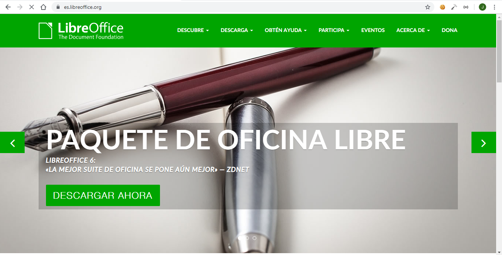Ya que hayamos dado click, nos permitirá seleccionar nuestro sistema operativo, en este caso elegiremos Windows con la arquitectura que tengamos.
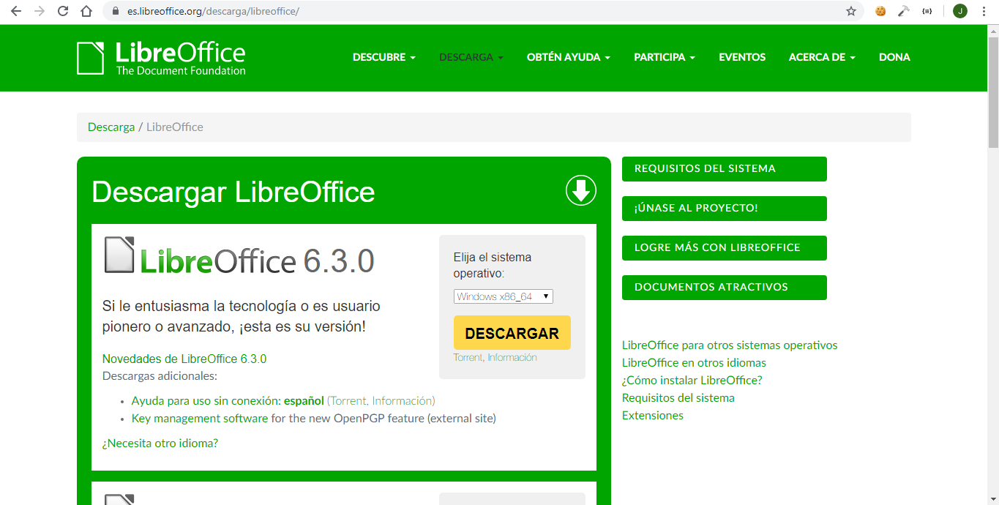Ya que lo seleccionemos, nos descargará un paquete de windows que abrirá un instalador
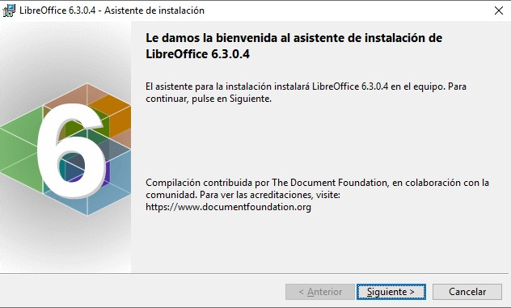Seleccionamos el tipo de instalación que necesitemos, lo más recomendable es la instalación "típica"
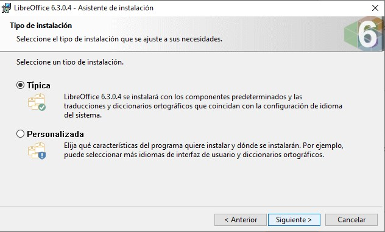Una vez seleccionado, nos aparecerá una barra de progreso, que nos señalará cuando nuestro software haya sido instalado correctamente
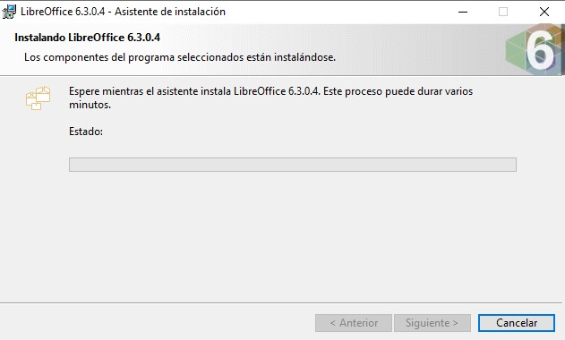Ya que se haya instalado, nos aparecerá una ventana donde nos menciona que ya se ha instalado de manera correcta, y procederá a cerrarse esa ventana
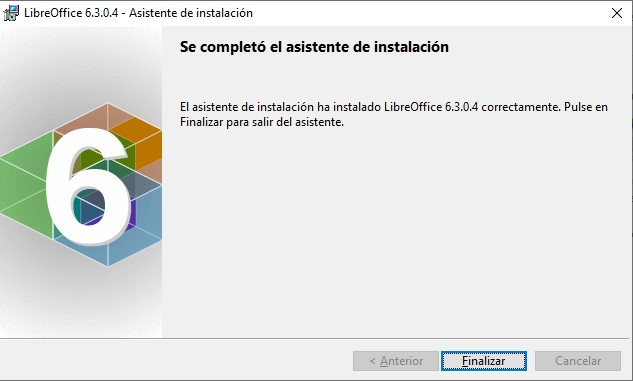Para comprobar que se haya instalado correctamente, nos vamos al icono de Windows y entraremos al listado de los programas. Si se instaló todo bien, nos aparecerá el listado en Todos los Programas
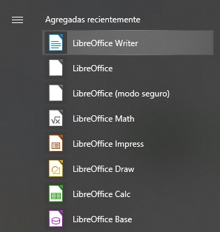Linux
Libre Office es un paquete de software de oficina libre, el cual nos permite manejar diferentes servicios para facilitar las actividades dentro de la oficina. Y lo mejor de todo, ¡es gratis!
Lo primero que tenemos que hacer es ir a la Tienda de programas de Ubuntu
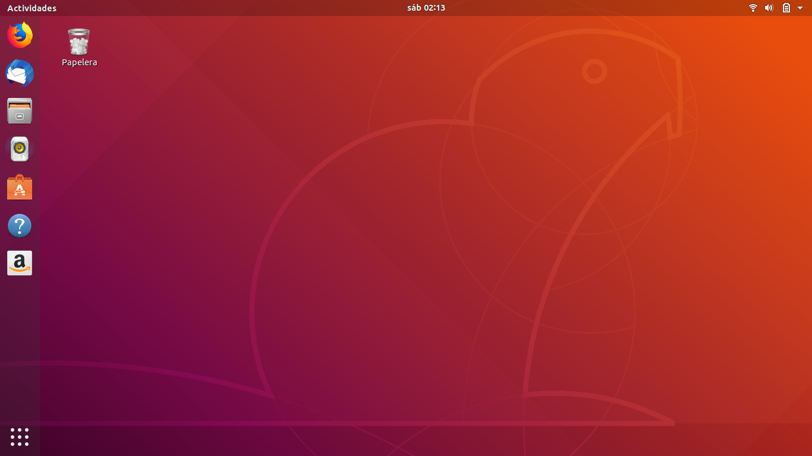Una vez dentro de la tienda, daremos click en la lupa para hacer una busqueda. La lupa se encuentra del lado derecho en la parte superior
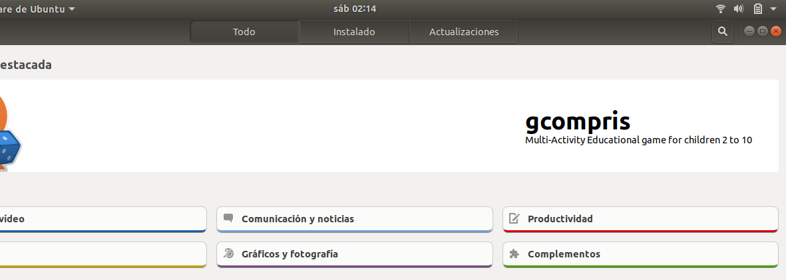Lo siguiente será buscar el paquete de Libre office, escribiendo el nombre en la barra de búsqueda. Después de dar enter, nos enlistará los posibles resultados. Daremos click en el que diga "Libre Office"

Seguido a eso, nos mostrará las características del software, así como algunas capturas de pantalla del mismo. Procederemos a dar click en "Instalar"
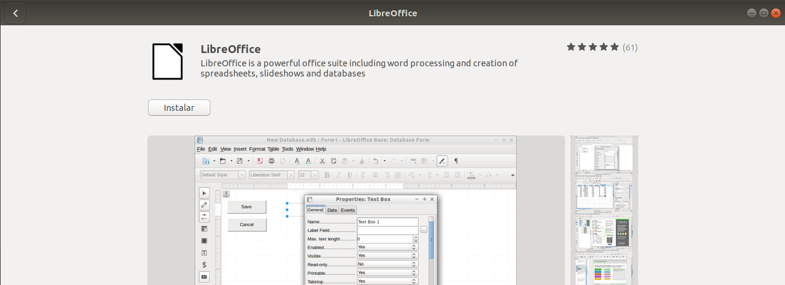En el momento que demos click en "Instalar", nos aparecerá una barra de progreso que nos mostrará cuando la instalación finalice.
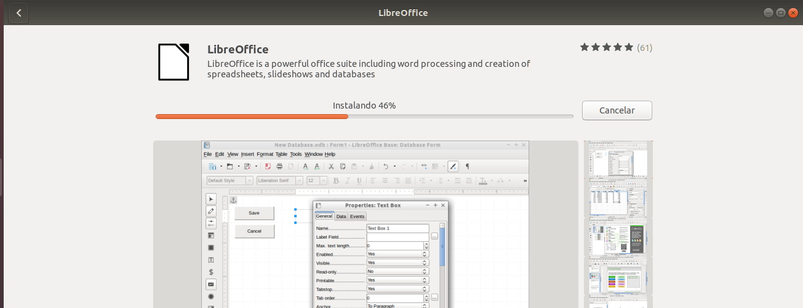Ya que se haya instalado correctamente nos aparecerá una serie de botones que nos permitirá iniciar el software, desinstalarlo o gestionar los permisos. Si nos aparecen esos botones, significa que la instalación se ha realizado de manera correcta
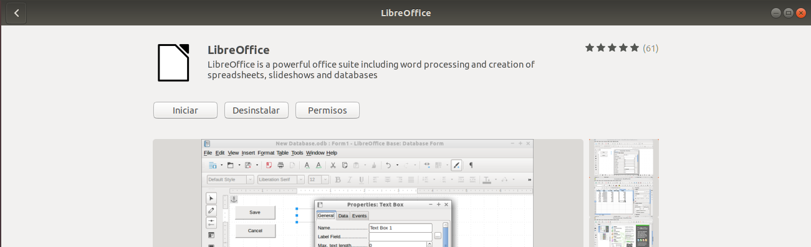